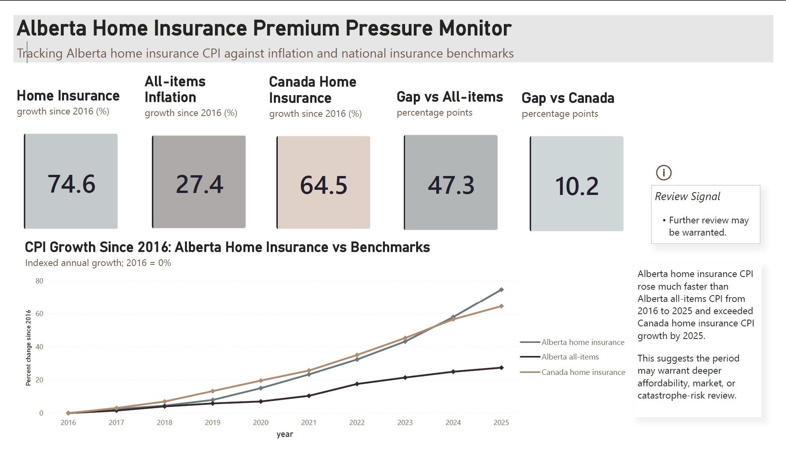

SQL · Python · Power BI · 2026
Alberta Home Insurance Premium Pressure Monitor
A stakeholder-focused monitoring project using 2016–2025 data to assess whether Alberta home insurance CPI growth diverged from inflation, national insurance trends, and selected cost and catastrophe context. Built with a SQLite warehouse, SQL quality checks, Python analysis, and a two-page Power BI dashboard.
View GitHub project